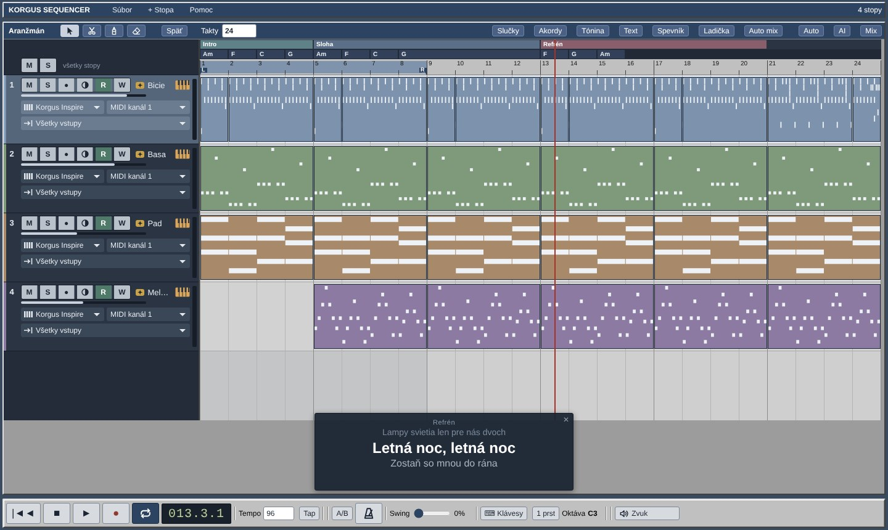
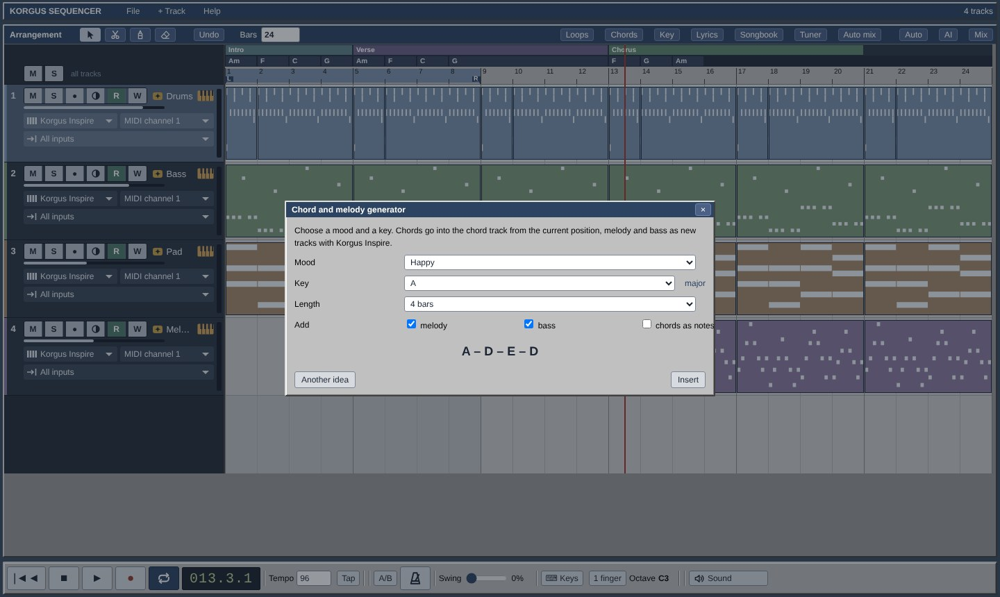
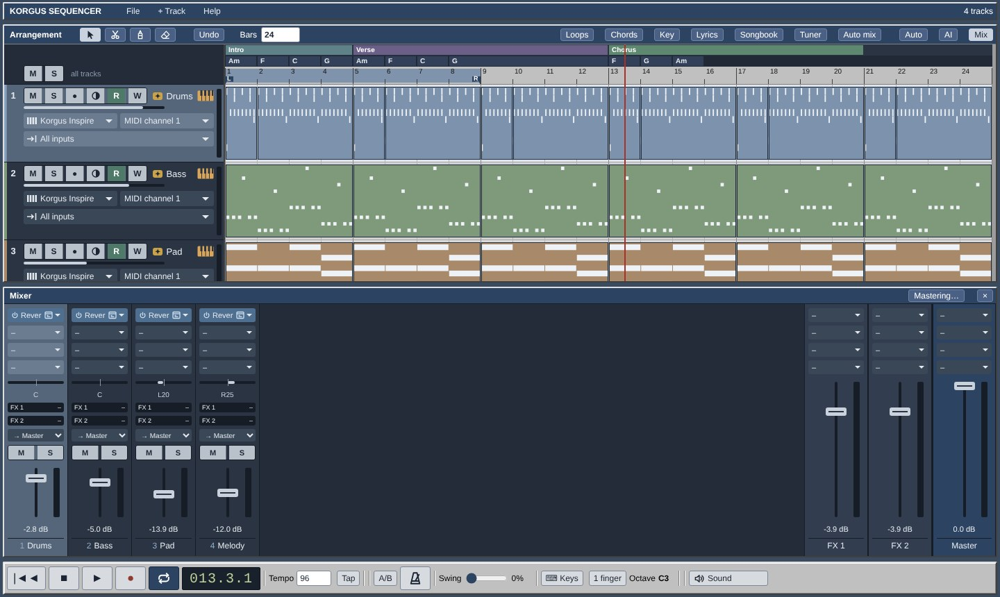
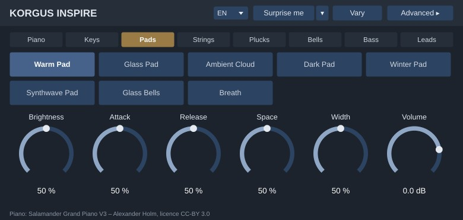
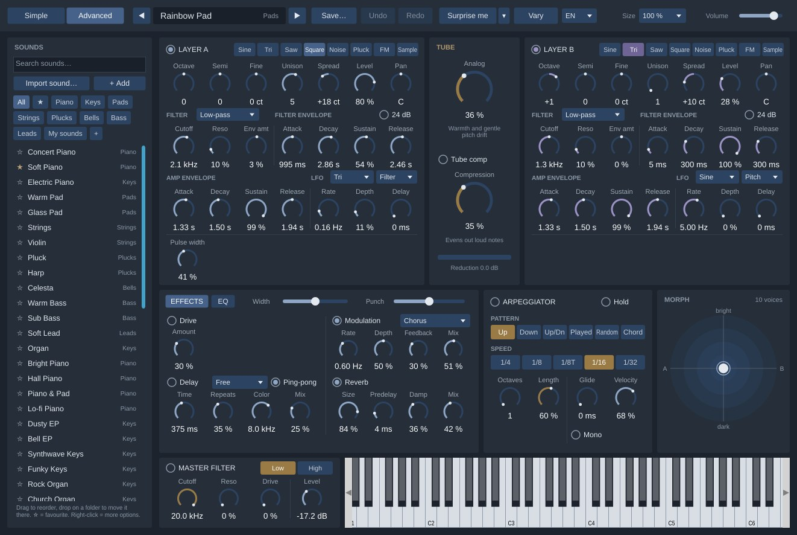
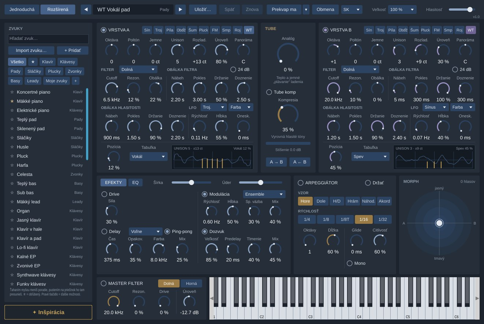
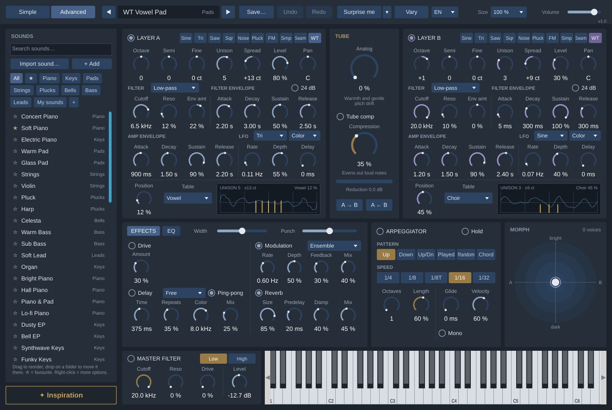

Hudobné štúdio, v ktorom sa nestratíš.A music studio you won't get lost in.
Úplne zadarmo · bez reklám · bez registrácie · so syntezátorom Korgus InspiriaCompletely free · no ads · no sign-up · with the Korgus Inspiria synth
Korgus Sequencer je jednoduchý a bezplatný program na tvorbu piesní pre Windows. Nahraj spev, nechaj si navrhnúť akordy, vlož text a hotovú pieseň ulož ako MP3 alebo video na TikTok – bez zložitého učenia.Korgus Sequencer is a simple, free songwriting program for Windows. Record vocals, get chord suggestions, add your lyrics and save the finished song as an MP3 or a TikTok video – no steep learning curve.
Zadarmo · Windows 10 / 11, 64-bit · inštalácia bez administrátora · automatické aktualizácieFree · Windows 10 / 11, 64-bit · no admin rights needed · automatic updates

Všetko, čo pieseň potrebujeEverything a song needs
Od prvého nápadu po hotovú nahrávku na jednom mieste. Ovládanie inšpirované klasickým Cubase, len oveľa jednoduchšie.From the first idea to a finished recording in one place. Controls inspired by classic Cubase, only much simpler.
NahrávanieRecording
Spev a nástroje cez mikrofón alebo zvukovú kartu (aj ASIO). Viac nahrávok tej istej pasáže, punch in/out. Tempo si nastavíš ťukaním (tap tempo).Vocals and instruments via microphone or audio interface (ASIO too). Multiple takes, punch in/out. Set the tempo by tapping (tap tempo).
Akordy a melódiaChords and melody
Vyber náladu a tóninu – program navrhne akordy, melódiu a basu. Akordy jedným prstom: každý kláves zahrá celý akord v tónine piesne.Pick a mood and key – the program suggests chords, melody and bass. One-finger chords: every key plays a full chord in the song key.
Text piesneLyrics
Text sa počas nahrávania posúva ako na teleprompteri. Časy riadkov nastavíš ťukaním a uložíš ako .lrc – titulky potom nájdeš aj vo videu.Lyrics scroll like a teleprompter while you record. Tap to set line timing, save it as .lrc – the subtitles also appear in your video.
Mix a masteringMix and mastering
Mixpult s efektmi, automatický mix stôp a mastering asistent, ktorý dorovná hlasitosť pre Spotify či TikTok.Mixer with effects, automatic track mix and a mastering assistant that matches loudness for Spotify or TikTok.
Spev jedným klikomOne-click vocals
Tlačidlo „Vylepšiť spev“ naraz odšumí, doladí (autotune) a pridá efekty na hlas. Ladička je v programe tiež.The “Enhance vocals” button denoises, tunes (autotune) and adds vocal effects at once. A built-in tuner is included too.
Video na TikTokTikTok video
Export MP4 9:16 s vizualizáciou a karaoke titulkami (text piesne v čase spevu) a k tomu MP3 – jedným klikom.Export a 9:16 MP4 with visualisation and karaoke subtitles (lyrics in time with the singing) plus an MP3 – in one click.
AI pomocníciAI helpers
Oddelenie spevu od hudby, rozloženie na 4 stopy, rozpoznanie akordov, tempa a tóniny piesne z nahrávky.Separate vocals from music, split into 4 stems, detect chords, tempo and the song key from a recording.
Bicie a slučkyDrums and loops
Krokový sekvencer bicích, knižnica rytmov a basových liniek, slučky zo Splice prispôsobené tempu piesne.Drum step sequencer, rhythm and bass line library, Splice loops matched to the song tempo.
Spevník do PDFSongbook to PDF
Text piesne s akordmi nad riadkami na vytlačenie alebo poslanie muzikantom.Lyrics with chords above the lines, ready to print or send to your band.
Hraj na klávesnici počítačaPlay on your computer keyboard
MIDI klávesy nepotrebuješ. Klikni na ikonu klávesnice vpravo dole a hraj: A S D F G H J K… ako v Abletone, Z/X mení oktávu, C/V silu úderu.No MIDI keyboard needed. Click the keyboard icon at the bottom right and play: A S D F G H J K… like in Ableton, Z/X changes the octave, C/V the velocity.
Korgus DozvukKorgus Reverb
Nový vlastný dozvuk: hustý a prirodzený, bez kovového zvonenia. Veľkosť, Dĺžka, Tlmenie, Predozvuk, Šírka a Mix.A new built-in reverb: dense and natural, without metallic ringing. Size, Length, Damping, Pre-delay, Width and Mix.
Pohodlná prácaEasy to work with
Posledné piesne v menu Súbor, farby stôp, sprievodca Prvé kroky a automatické aktualizácie.Recent songs in the File menu, track colours, a First steps guide and automatic updates.
Od nápadu k piesniFrom idea to song
Nemusíš byť hudobník. Program ťa vedie a robí za teba to, čo by inak trvalo hodiny.You don't have to be a musician. The program guides you and does what would otherwise take hours.
Generátor akordov navrhne postup podľa náladyChord generator suggests a progression by mood
Akordy jedným prstom – hráš jednu notu, znie celý akord v tónine piesneOne-finger chords – play one note, a full chord in the song key sounds
Korgus Inspiria – vstavaný syntezátor s tlačidlom „Prekvap ma“Korgus Inspiria – built-in synth with a “Surprise me” button
Suno pesničky rozloží na stopy a pomôže z nich spraviť vlastný remixSuno songs split into stems to make your own remix
Sekcie piesne (Sloha, Refrén) presunieš alebo skopíruješ narazSong sections (verse, chorus) move or copy in one go


Znie ako zo štúdiaSounds like a studio
Vstavané efekty, podpora VST3 pluginov a nástroje, ktoré poznáš z veľkých programov.Built-in effects, VST3 plugin support and tools you know from the big programs.
EQ, kompresor, Korgus Dozvuk, ozvena, de-esser, limiter a ďalšieEQ, compressor, Korgus Reverb, delay, de-esser, limiter and more
Automatický mix jedným klikom – hlasitosti a panorámu nastaví programAutomatic mix in one click – the program sets levels and pan
Automatizácia hlasitosti, panorámy a parametrov pluginovAutomation of volume, pan and plugin parameters
Referenčná pesnička A/B – porovnaj svoj mix so vzoromA/B reference track – compare your mix with a model song
Ochrana pred pádmi pluginov – po páde cudzieho pluginu ti program ponúkne, že ho zablokujePlugin crash protection – if a third-party plugin crashes, the program offers to block it
Korgus Inspiria – syntezátor v balíkuKorgus Inspiria – synth included
Súčasťou Korgus Sequencera je vlastný syntezátor Korgus Inspiria (VST3). Nainštaluje sa spolu s programom, zadarmo, a každá nová nástrojová stopa ho dostane automaticky.Korgus Sequencer comes with its own synth, Korgus Inspiria (VST3). It installs together with the program, free, and every new instrument track gets it automatically.
Prekvap ma – jedným klikom nový, inšpiratívny zvuk z vybranej kategórieSurprise me – a fresh, inspiring sound from the chosen category in one click
Skutočný klavír (Salamander Grand Piano) a načítanie vlastných WAV zvukovA real piano (Salamander Grand Piano) and loading your own WAV sounds
Jednoduchý režim so šiestimi gombíkmi pre začiatočníkov, rozšírený pre pokročilýchSimple mode with six knobs for beginners, advanced for power users
Nauč sa zvuk – Inspiria sa pokúsi napodobniť nástroj z tvojej piesne (syntézou, voliteľne pomocou sampla vo vrstve B)Learn a sound – Inspiria tries to imitate an instrument from your song (by synthesis, optionally using a sample in layer B)
✦ Inšpirácia zachytí, čo si práve zahral, aj keď si nenahrával. V Korgus Sequenceri to vloží do stopy, inde uloží ako MIDI alebo WAV (napr. podklad pre Suno)✦ Inspiration captures what you just played, even if you weren't recording. In Korgus Sequencer it goes straight into a track, elsewhere it is saved as MIDI or WAV (e.g. a backing for Suno)
Roj – nová vlastná syntéza: alikvótne tóny sa pri nástupe tónu „zladia“ do jedného zvuku. Mäkké, živé pady podobné mellotronuSwarm – a new synthesis of our own: overtones “tune in” to one sound as the note starts. Soft, living pads similar to a mellotron
Wavetable oscilátor s 8 tabuľkami (Analóg, PWM, Harmonický, Vokál, Digitál, Organ, Sklo, Spev), plynulou Pozíciou, ktorou vie hýbať LFO. Grafický ukazovateľ ukazuje unison hlasyWavetable oscillator with 8 tables (Analog, PWM, Harmonic, Vocal, Digital, Organ, Glass, Choir), a smooth Position the LFO can move. A graphic display shows the unison voices
Kopírovanie vrstiev A → B a A ← B, nový dozvuk (ten istý ako Korgus Dozvuk) a číslo verzie v hornej lišteCopy layers A → B and A ← B, a new reverb (same engine as Korgus Reverb) and the version number in the top bar
Dve vrstvy, filtre, arpeggiátor, morph, efekty a ekvalizér so spektromTwo layers, filters, arpeggiator, morph, effects and an EQ with spectrum




Ako začaťGet started
Za pár minút nahráš prvú pieseň.Record your first song in a few minutes.
Stiahni a nainštalujDownload and install
Inštalátor nepotrebuje administrátora. Nové verzie si program stiahne sám.The installer needs no admin rights. The program downloads new versions by itself.
Prejdi Prvé krokyFollow First steps
Krátky sprievodca ti ukáže, kde je nahrávanie, akordy, text a export.A short guide shows you where recording, chords, lyrics and export are.
Tvor a zdieľajCreate and share
Nahraj, zmixuj a ulož ako MP3 alebo video na TikTok jedným klikom.Record, mix and save as MP3 or a TikTok video in one click.
Časté otázkyFAQ
Koľko program stojí?How much does it cost?
Nič. Korgus Sequencer je zadarmo, bez reklám a bez registrácie. Zadarmo sú aj všetky aktualizácie, syntezátor Korgus Inspiria a AI funkcie ako oddelenie spevu či rozpoznanie akordov – bežia priamo v počítači. Jediná voliteľná výnimka je AI asistent, ktorý potrebuje vlastný kľúč OpenRouter.Nothing. Korgus Sequencer is free, with no ads and no sign-up. All updates, the Korgus Inspiria synth and AI features like vocal separation or chord detection are free too – they run right on your computer. The only optional exception is the AI assistant, which needs your own OpenRouter key.
Na akom počítači program beží?What computer does it run on?
Windows 10 alebo 11, 64-bit. Stačí bežný počítač; na nahrávanie odporúčame slúchadlá na kábli.Windows 10 or 11, 64-bit. An ordinary PC is enough; for recording we recommend wired headphones.
Môžem používať vlastné VST pluginy?Can I use my own VST plugins?
Áno, program načíta VST3 nástroje a efekty. Ak cudzí plugin spadne, program ti ponúkne, že ho zablokuje, a pri ďalšom spustení ho nenačíta.Yes, the program loads VST3 instruments and effects. If a third-party plugin crashes, the program offers to block it and skips it on the next start.
Ako sa program aktualizuje?How does the program update?
Pri spustení skontroluje novú verziu a ponúkne aktualizáciu. Po kliknutí sa sám nainštaluje a znova spustí.On start it checks for a new version and offers an update. One click installs it and restarts the program.
Je program po slovensky?Is the program in English?
Áno, program je po slovensky aj po anglicky a jazyk sa dá prepnúť.Yes, the program is available in English and Slovak and the language can be switched.
Potrebujem MIDI klávesy?Do I need a MIDI keyboard?
Nie. Môžeš hrať na klávesnici počítača: klikni na ikonu klávesnice vpravo dole a hraj na A S D F G H J K… (ako v Abletone). Z a X menia oktávu, C a V silu úderu. MIDI klávesy môžeš pripojiť, ak ich máš, ale nie sú nutné.No. You can play on your computer keyboard: click the keyboard icon at the bottom right and play A S D F G H J K… (like in Ableton). Z and X change the octave, C and V the velocity. You can plug in a MIDI keyboard if you have one, but you don't need it.
Dá sa súčasne prehrávať aj nahrávať?Can I play and record at the same time?
Áno. Pri nahrávaní hrajú všetky ostatné stopy a ty nahrávaš na stopu, ktorá má zapnuté ●.Yes. While recording, all other tracks play and you record onto the track with ● turned on.
Tvoja prvá pieseň čakáYour first song is waiting
Korgus Sequencer je zadarmo – stiahni ho a začni tvoriť ešte dnes.Korgus Sequencer is free – download it and start creating today.